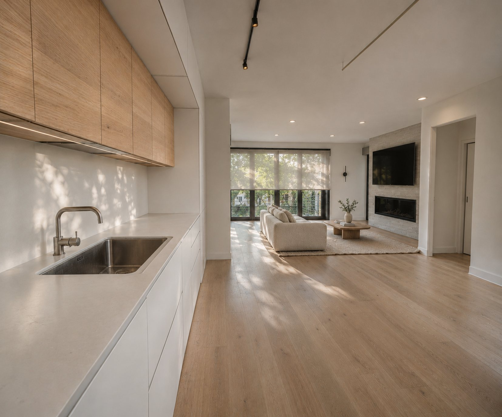
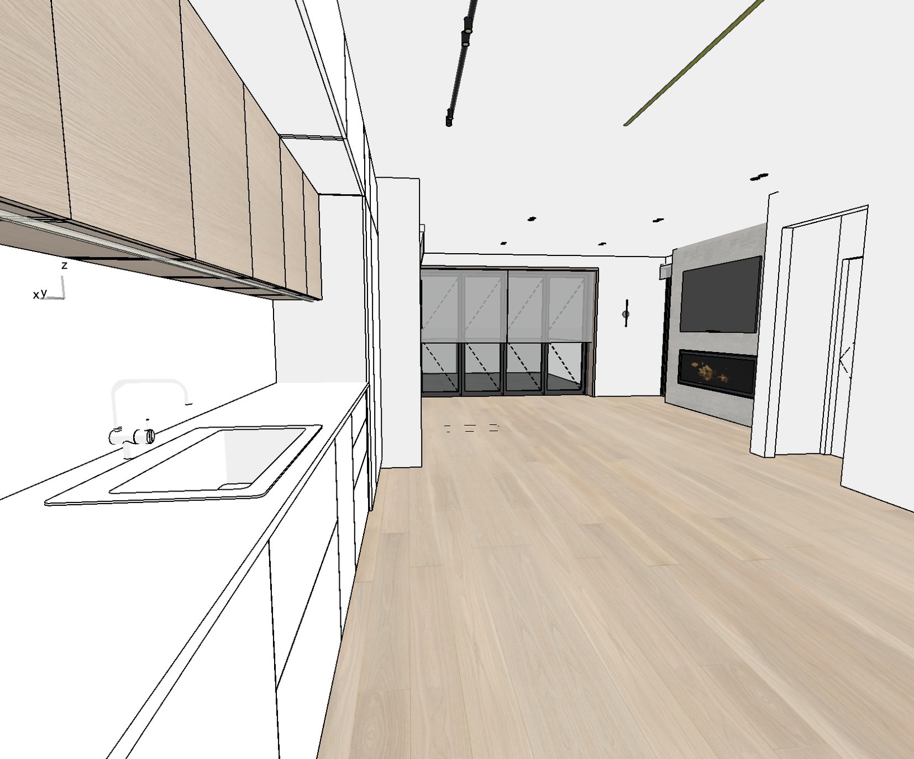
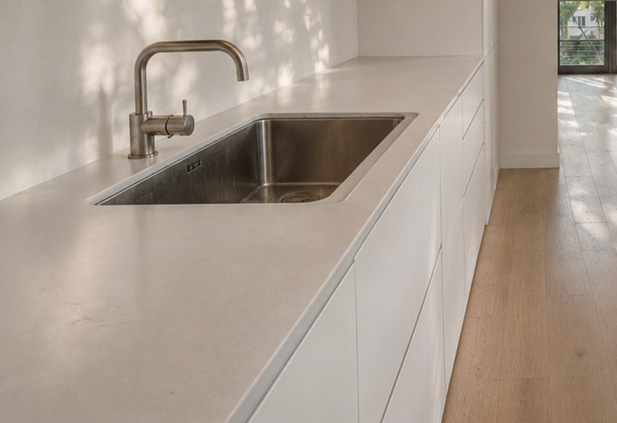
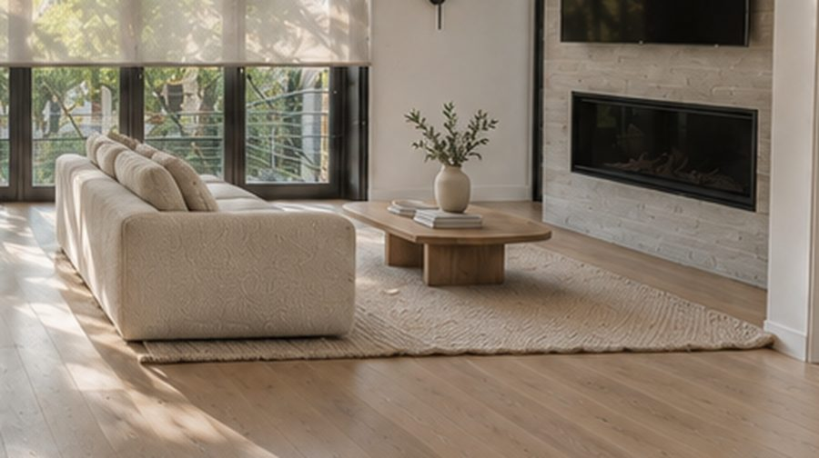

Project 02 · Home · Full Room
A kitchen that opens to the light


The story
The goal was simple: cook and still feel like part of the room. A long run of warm oak cabinets floats above a pale stone counter, with a light strip tucked underneath so the counter glows at night. The lower cabinets are plain and handle-free, so the whole wall stays quiet.
From the sink you look straight down the oak floor to the windows, the sofa and the same linear fireplace style as the living room. Black track lights add a little edge, and a single brass line on the ceiling ties it all together.


